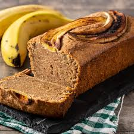

Bem-vindo ao Cardápio do 9º Ano!
Descubra nossas receitas criativas e sustentáveis.
Bolo de Casca de Banana 🍌
como fazer na sua casa
Ingredientes:
- 3 bananas maduras
- 2 cascas de banana (bem lavadas)
- 2 ovos
- 1 xícara de açúcar
- 1/2 xícara de óleo vegetal
- 1 xícara de farinha de trigo
- 1 colher de sopa de fermento em pó
- 1 pitada de sal
- Canela a gosto (opcional)
Modo de Preparo:
- Lave bem as cascas das bananas, retire as pontas e pique em pedaços pequenos.
- Coloque as cascas no liquidificador com os ovos e o óleo. Bata até formar um creme homogêneo.
- Adicione o açúcar e bata novamente.
- Em uma tigela, peneire a farinha, o fermento e o sal. Misture delicadamente ao creme do liquidificador.
- Unte uma forma com manteiga e farinha, despeje a massa e leve ao forno pré-aquecido a 180°C por 30-40 minutos.
- Retire do forno, espere esfriar e desenforme. Polvilhe canela ou açúcar de confeiteiro se desejar.
Dica: Adicione cacau em pó ou pedaços de banana para variar.

Geleia de Manga 🥭
como fazer na sua casa
Ingredientes:
- 3 mangas maduras
- 1/2 xícara de açúcar (ou a gosto)
- Suco de 1/2 limão
- 1/2 xícara de água (opcional)
Modo de Preparo:
- Descasque as mangas e corte em pedaços pequenos.
- Coloque os pedaços de manga em uma panela com o açúcar e o suco de limão.
- Cozinhe em fogo baixo, mexendo sempre, até formar uma pasta.
- Se desejar geleia mais líquida, adicione água aos poucos.
- Retire do fogo e deixe esfriar. Armazene em pote limpo na geladeira.

Brigadeiro de Casca de Banana 🍫
como fazer na sua casa
Ingredientes:
- 2 cascas de banana maduras
- 1 lata de leite condensado
- 2 colheres de sopa de cacau em pó
- 1 colher de sopa de manteiga
- Chocolate granulado para enrolar
Modo de Preparo:
- Lave as cascas de banana e corte em pedaços pequenos.
- Coloque as cascas, leite condensado, cacau e manteiga em panela.
- Cozinhe em fogo médio, mexendo sempre, até desgrudar do fundo.
- Deixe esfriar um pouco, enrole bolinhas e passe no granulado.

Obrigado por acessar nossas receitas!